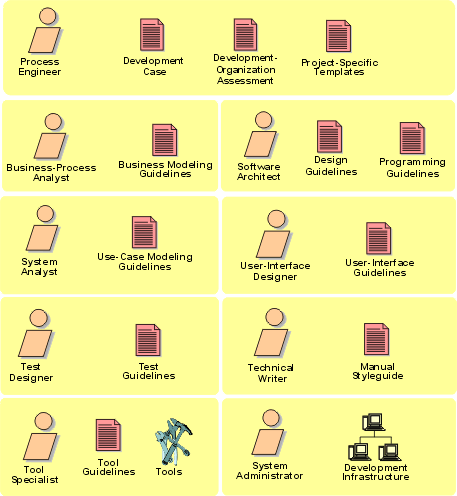

Artifacts > Environment Artifact Set
The Environment artifact set presents artifacts which are used as guidance throughout the development of the system to ensure consistency of all artifacts produced.

Copyright © 1987 - 2001 Rational Software Corporation
Rational Unified Process
 Artifacts >
Artifacts >
 Environment Artifact Set
Environment Artifact Set